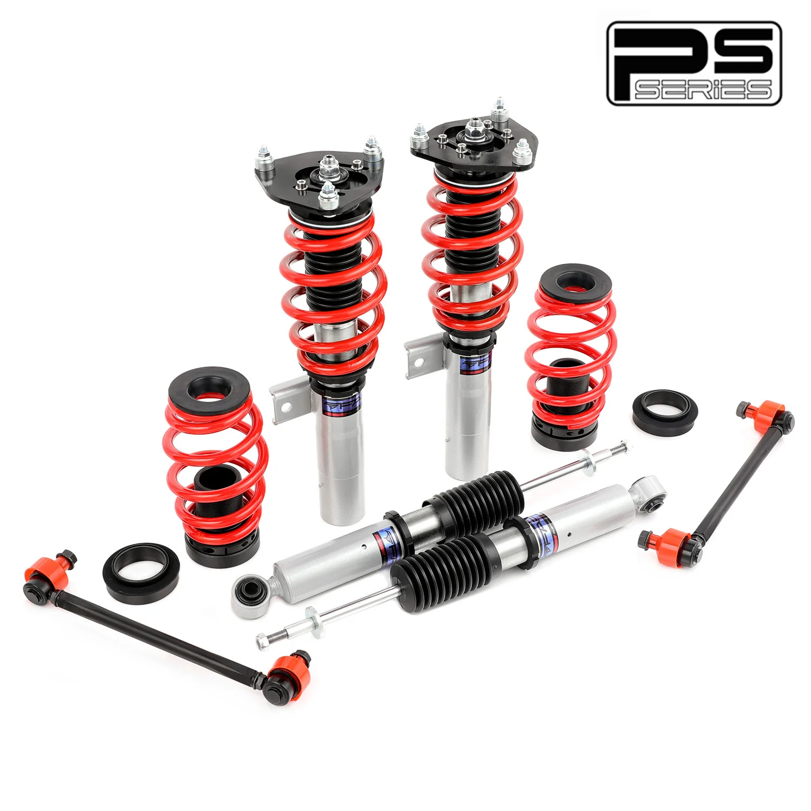

1 / 6Zawieszenie gwintowane do Volkswagen Jetta/Golf MK5 MK6 FWD 2006-2017 PS004110
Zastosowanie: Volkswagen Jetta 5. generacji MK5/A5 2005-2011 Volkswagen Jetta 6. generacji MK6/A6 2011-2019 Volkswagen Golf 5. generacji (GTI, DTI) MK5/A5 2003-2009 Volkswagen Golf 6. gen MK6/A6 2009-2012 Uwaga dotycząca montażu produktu: Informujemy, że PS004110 produkty charakteryzują się a Średnica dolnej kolumny 55 mm i zostały zaprojektowane specjalnie dla modeli wymagających tego rozmiaru. Jeśli Twój pojazd wy…
Application: Volkswagen Jetta 5th Gen MK5/A5 2005-2011 Volkswagen Jetta 6th Gen MK6/A6 2011-2019 Volkswagen Golf 5th Gen (GTI, DTI) MK5/A5 2003-2009 Volkswagen Golf 6th Gen MK6/A6 2009-2012 Product Fitment Notice: Please be advised that the PS004110 products feature a 55mm lower strut diameter and are designed specifically for models requiring this size. If your vehicle requires a 50mm lower strut , this version will not be compatible. Please verify your vehicle's strut diameter before purchasing to ensure correct fitment. Package Includes: Front coilovers × 2 pcs Rear coilovers × 2 pcs wrench × 2 pcs Sway bar x 2 pcs Features: Mono-tube shock design, provide larger capacity of oil and gas Adjustable ride height Adjustable pre-load spring tension Hi Tensile performance spring - Under 600,000 times continuously test, the spring distortion is less than 0.04%. Plus, the special surface treatment is to improve the durability and performance. All inserts come with fitted rubber boots to protect the damper and keep clean. Improve your handling performance without sacrifice comfortable ride. A fast and affordable way to easily upgrade your car's appearance. Easy installation with right tools. Ideal for any track, drift and fast road and can also be used for daily driving. The accessories in the photos are included Default 1-year warranty for any manufacturing defect, upgrade to 2 years with our Extended Warranty Program Technical Specifications: Spring rate Front: 6 kg/mm Spring rate Rear: 6 kg/mm Adjustable height: Yes Adjustable camber plate: Only front coilovers Adjustable damper: Non Adjustable Damper Force Warranty All the items carry standard 1 year warranty from the date of purchase. Proof of purchases is required and it's better to send us your order number. Besides, in order to speed up warranty claim, please show us images and document as much as details. Pictures and videos are good enough at most time and we don't need the defected items back. Sometimes we may ask for more data to confirm what's the problem and it can help us to fix it better.
1799,99 PLN
Opis produktu
Zastosowanie:
- Volkswagen Jetta 5. generacji MK5/A5 2005-2011
- Volkswagen Jetta 6. generacji MK6/A6 2011-2019
- Volkswagen Golf 5. generacji (GTI, DTI) MK5/A5 2003-2009
- Volkswagen Golf 6. genMK6/A62009-2012
Uwaga dotycząca montażu produktu:
Informujemy, żePS004110produkty charakteryzują się aŚrednica dolnej kolumny 55 mmi zostały zaprojektowane specjalnie dla modeli wymagających tego rozmiaru. Jeśli Twój pojazd wymaga:Dolna rozpórka 50mm, ta wersja nie będzie kompatybilna. Przed zakupem sprawdź średnicę amortyzatora w swoim pojeździe, aby upewnić się, że jest on prawidłowo zamontowany.
Zawartość zestawu:
- Gwinty przednie × 2 szt
- Gwinty tylne × 2 szt
- klucz × 2 szt
- Stabilizator x 2 szt
Cechy produktu:
- Konstrukcja amortyzatora jednorurowego zapewnia większą pojemność oleju i gazu
- Regulowana wysokość jazdy
- Regulowane napięcie sprężyny wstępnej
- Witam Sprężyna o wytrzymałości na rozciąganie - Podczas ciągłego testu poniżej 600 000 razy odkształcenie sprężyny jest mniejsze niż 0,04%. Ponadto specjalna obróbka powierzchni ma na celu poprawę trwałości i wydajności.
- Do wszystkich wkładek dołączone są gumowe buty chroniące amortyzator i utrzymujące je w czystości.
- Popraw swoje właściwości jezdne, nie rezygnując z wygodnej jazdy.
- Szybki i niedrogi sposób na łatwą poprawę wyglądu Twojego samochodu.
- Łatwa instalacja przy użyciu odpowiednich narzędzi.
- Idealny na każdy tor, drift i szybką drogę, może być również używany do codziennej jazdy.
- Akcesoria widoczne na zdjęciach są wliczone w cenę
- Standardowa roczna gwarancja na każdą wadę produkcyjną, możliwość rozszerzenia do 2 lat w ramach naszego programu rozszerzonej gwarancji
Dane techniczne:
- Twardość sprężyny Przód: 6 kg/mm
- Twardość sprężyny Tył: 6 kg/mm
- Regulowana wysokość: Tak
- Regulowana płyta pochylenia: tylko przednie gwintowane
- Regulowany amortyzator: Nieregulowana siła amortyzatora
Gwarancja
Wszystkie produkty objęte są standardową roczną gwarancją liczoną od daty zakupu. Wymagany jest dowód zakupu i najlepiej przesłać nam numer zamówienia. Poza tym, aby przyspieszyć realizację zgłoszenia gwarancyjnego, prosimy o pokazanie zdjęć i udokumentowanie jak największej ilości szczegółów. Zdjęcia i filmy są w większości przypadków wystarczająco dobre i nie potrzebujemy zwrotu uszkodzonych elementów. Czasami możemy poprosić o więcej danych, aby potwierdzić, na czym polega problem i pomóc nam w lepszym jego rozwiązaniu.
Application:
- Volkswagen Jetta 5th Gen MK5/A5 2005-2011
- Volkswagen Jetta 6th Gen MK6/A6 2011-2019
- Volkswagen Golf 5th Gen (GTI, DTI) MK5/A5 2003-2009
- Volkswagen Golf 6th Gen MK6/A6 2009-2012
Product Fitment Notice:
Please be advised that the PS004110 products feature a 55mm lower strut diameter and are designed specifically for models requiring this size. If your vehicle requires a 50mm lower strut, this version will not be compatible. Please verify your vehicle's strut diameter before purchasing to ensure correct fitment.
Package Includes:
- Front coilovers × 2 pcs
- Rear coilovers × 2 pcs
- wrench × 2 pcs
- Sway bar x 2 pcs
Features:
- Mono-tube shock design, provide larger capacity of oil and gas
- Adjustable ride height
- Adjustable pre-load spring tension
- Hi Tensile performance spring - Under 600,000 times continuously test, the spring distortion is less than 0.04%. Plus, the special surface treatment is to improve the durability and performance.
- All inserts come with fitted rubber boots to protect the damper and keep clean.
- Improve your handling performance without sacrifice comfortable ride.
- A fast and affordable way to easily upgrade your car's appearance.
- Easy installation with right tools.
- Ideal for any track, drift and fast road and can also be used for daily driving.
- The accessories in the photos are included
- Default 1-year warranty for any manufacturing defect, upgrade to 2 years with our Extended Warranty Program
Technical Specifications:
- Spring rate Front: 6 kg/mm
- Spring rate Rear: 6 kg/mm
- Adjustable height: Yes
- Adjustable camber plate: Only front coilovers
- Adjustable damper: Non Adjustable Damper Force
Warranty
All the items carry standard 1 year warranty from the date of purchase. Proof of purchases is required and it's better to send us your order number. Besides, in order to speed up warranty claim, please show us images and document as much as details. Pictures and videos are good enough at most time and we don't need the defected items back. Sometimes we may ask for more data to confirm what's the problem and it can help us to fix it better.
FAPO Polska
Ten produkt obsługujemy lokalnie
Autoryzowana obsługa
FAPO Polska prowadzi katalog, kontakt i zamówienia bez odsyłania klienta do zewnętrznych sklepów.
Dobór po aucie
Sprawdzamy dopasowanie produktu do pojazdu, rocznika i wersji przed finalizacją zamówienia.
Wsparcie po zakupie
Masz kontakt w Polsce w sprawach zamówień, wysyłki, gwarancji i zwrotów.